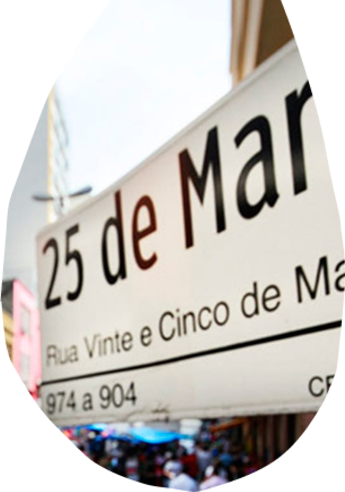
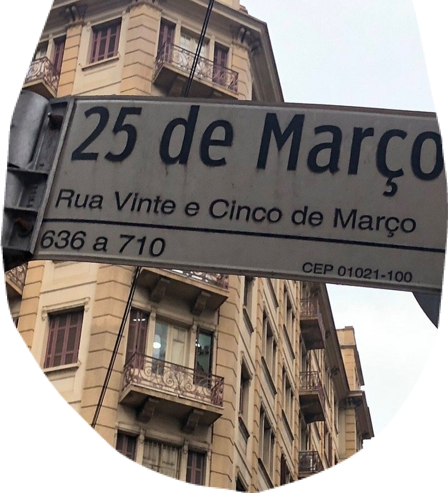

<div class="voc-sabia-polo-mooca">
    <div class="div">
      <div class="overlap">
        <div class="overlap-group">
          <div class="group">
            <div class="overlap-group-2">
              <div class="voc">VOCÊ</div>
              <div class="sabia">SABIA?</div>
            </div>
          </div>
          <div class="paragrafo-com-scroll">
            <p class="a-atual-identidade">
                A Rua 25 de Março é o maior centro comercial popular a céu aberto da cidade. 
                Ela é palco de oportunidades para pequenos e grandes comerciantes, e em sua imensa  variedade de produtos, 
                preços e oportunidades, reflete a diversidade cultural de São Paulo.&nbsp;&nbsp;<br /><br />
                Vamos dar um pulo na 25?”. 
                Quantas vezes um paulista fala ou ouve esta frase na vida? 
                A Rua 25 de Março é um universo de comércio, onde a agitação toma conta das ruas e a variedade de produtos fascina os olhos. 
                Mais do que um centro de compras, é um caldeirão de culturas, um reflexo de São Paulo.&nbsp;&nbsp;<br /><br />
                Seja qual for o seu estilo ou necessidade, a Rua 25 de Março tem algo para você. 
                Desde roupas e acessórios até eletrônicos e artigos para casa, a variedade de produtos é infinita. 
                Descubra pechinchas incríveis, negocie preços e encontre aquele item único que você tanto procura.&nbsp;&nbsp;<br /><br />
                Trata-se de um marco histórico de São Paulo. 
                Desde sua fundação em 1865, testemunhou a evolução da cidade e se tornou um símbolo da força do comércio local.
                O nome da rua é uma homenagem à primeira constituição brasileira assinada no dia 25 de março de 1824.
                Uma experiência cultural única.
            </p>
          </div>
          
        </div>
        <div class="overlap-2">
           
        </div>
      </div>
      <div class="vector-wrapper"></div>
      
      
      
      <div class="img-wrapper"></div>
    </div>
</div>
